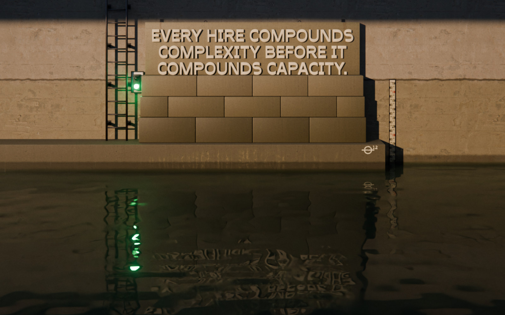

Scaling Up‑Side‑Down
In an open system, AI accelerates chaos.
In a closed system, AI accelerates clarity.
The book changed how you think.
Scaling Up‑Side‑Down
Michael Wentz
Wentz spent nearly a decade in institutional finance before building and operating a bootstrapped business that scaled beyond 40 people.
This SUSD Bootloader changes how you operate.
SUSD Bootloader
The book's appendix as one file, for your AI
- Free file
- Version 16, 35,445 words, Markdown
- Works with Claude, ChatGPT and Gemini
Upload the file and use the starting prompt provided with it.
Then let the system locate you.